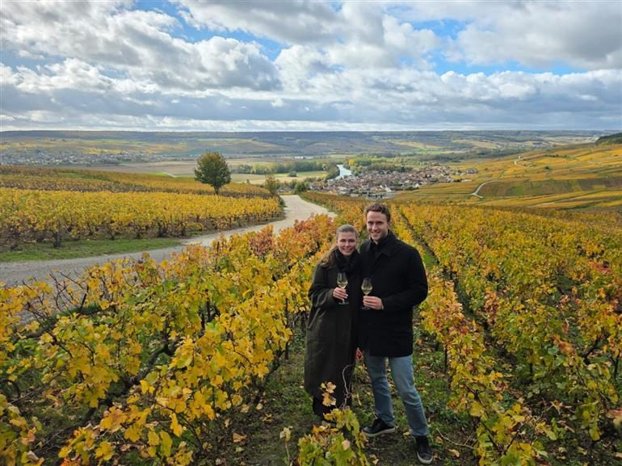
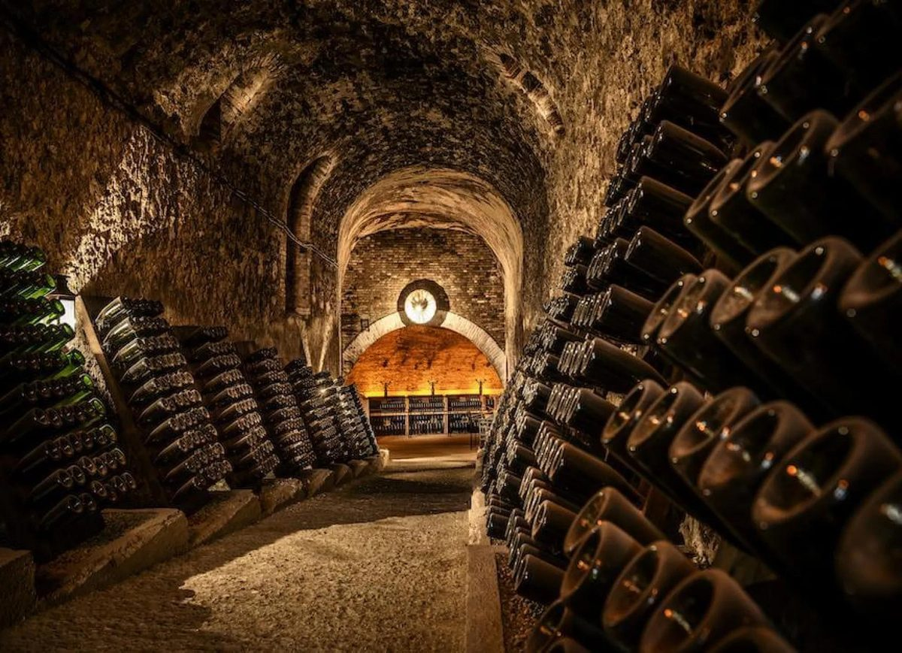
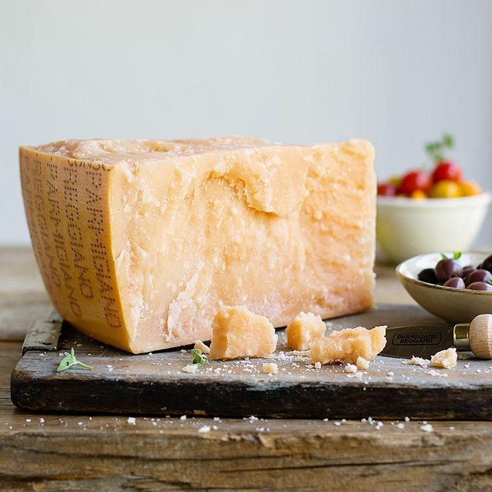
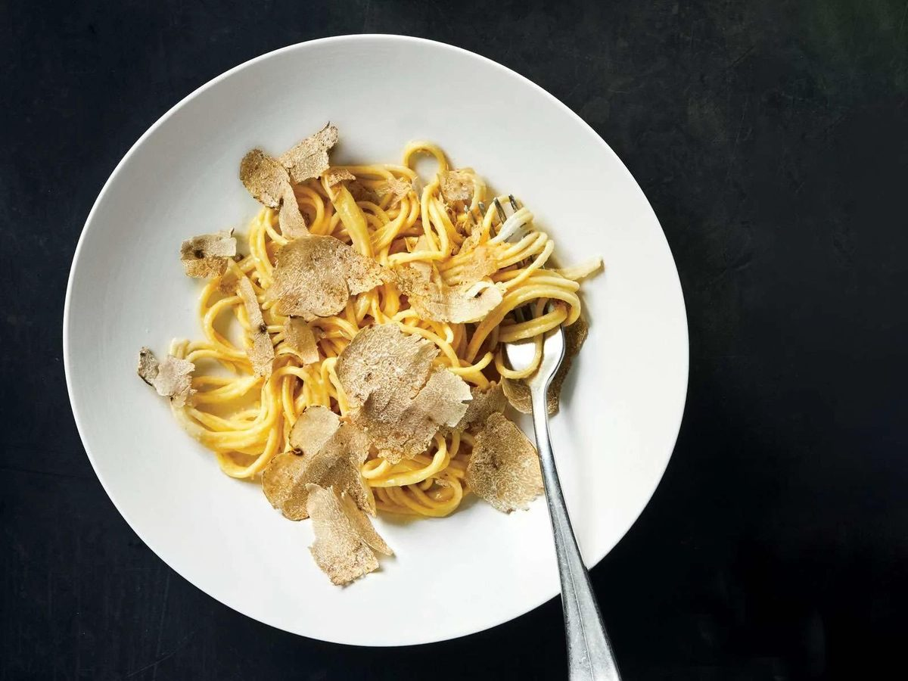
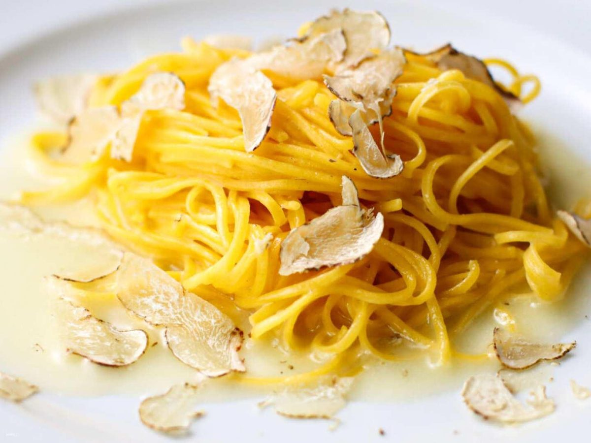
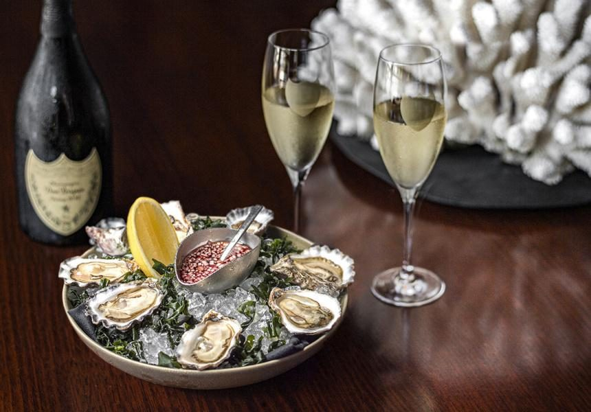
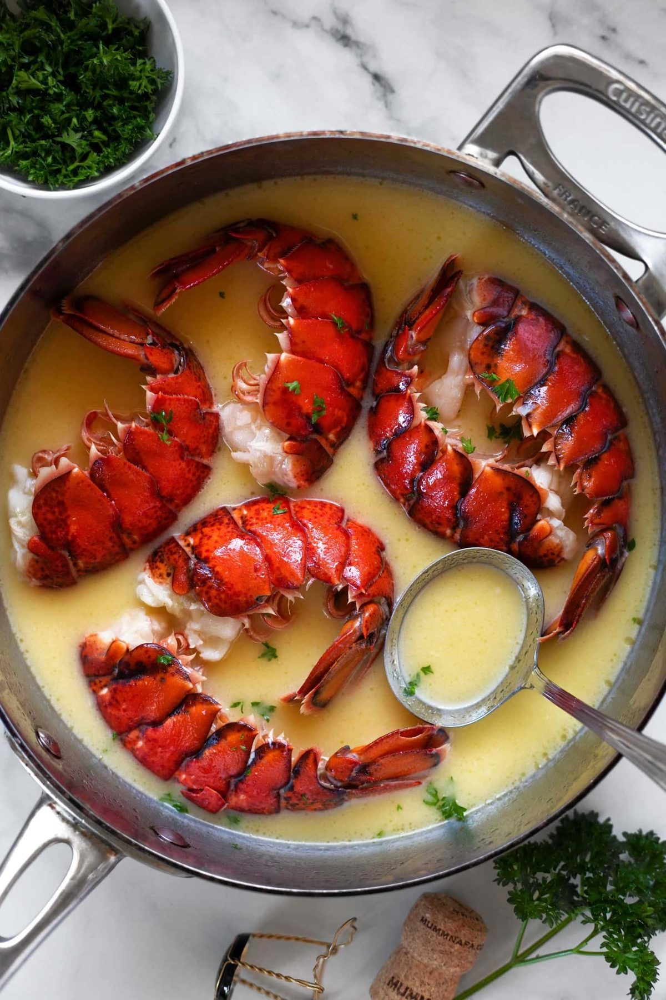

19세기 샴페인의 황금기를 담은 부티크 샴페인
마리 드메 뀌베 19세기 시에클
마리 드메 뀌베 19세기 시에클(Marie Demets Cuvée 19ème Siècle)은 이름처럼 19세기 프랑스 샴페인의 황금기를 오마주한 샴페인입니다. 대형 메종에서는 느끼기 어려운 부티크 샴페인만의 섬세함과 깊이를 담아낸 와인으로, 샴페인을 좋아하는 분이라면 한 번쯤 꼭 경험해볼 만한 가치가 있습니다.
마리 드메 뀌베 19세기 시에클(Marie Demets Cuvée 19ème Siècle)은 이름처럼 19세기 프랑스 샴페인의 황금기를 오마주한 샴페인입니다. 대형 메종에서는 느끼기 어려운 부티크 샴페인만의 섬세함과 깊이를 담아낸 와인으로, 샴페인을 좋아하는 분이라면 한 번쯤 꼭 경험해볼 만한 가치가 있습니다.



샴페인을 이야기할 때 많은 사람들이 돔 페리뇽, 크룩, 볼랭저 같은 유명 메종을 먼저 떠올립니다.
하지만 최근 샴페인 애호가들 사이에서는 생산량이 적은 '그로워 샴페인(Grower Champagne)'이 큰 인기를 얻고 있습니다.
마리 드메 역시 직접 포도를 재배하고 양조하는 소규모 생산자로, 자신의 포도밭에서 얻은 포도만으로 샴페인을 만드는 정통 그로워 샴페인입니다.
대량 생산보다 한 병 한 병의 완성도를 중요하게 생각하는 생산 철학 덕분에 자연스러운 개성과 terroir를 그대로 표현하는 것이 가장 큰 특징입니다.
'19세기 시에클'이라는 이름의 의미
'19ème Siècle'는 프랑스어로 19세기를 의미합니다.
19세기는 샴페인이 오늘날 세계 최고의 스파클링 와인으로 자리 잡기 시작한 시기이자, 귀족과 왕실 문화 속에서 최고의 축하주로 사랑받던 시대였습니다.
이 샴페인은 당시의 클래식한 스타일을 현대적으로 재해석하여,
풍부한 숙성감
섬세한 버블
우아한 산미
긴 여운
을 모두 담아낸 것이 특징입니다.
테이스팅 노트
잔에 따르면 밝은 골드 컬러와 함께 매우 고운 기포가 끊임없이 올라옵니다.
첫 향에서는 잘 익은 사과와 배, 레몬 제스트 같은 신선한 과일 향이 느껴지고, 이어 브리오슈와 구운 아몬드, 헤이즐넛, 은은한 꿀 향이 겹겹이 펼쳐집니다.
입안에서는 풍성하지만 결코 무겁지 않습니다.
섬세한 산미가 중심을 잡아주고, 크리미한 질감과 미네랄이 균형을 이루며 마지막에는 긴 여운이 오래 남습니다.
시간이 지날수록 복합적인 풍미가 더욱 풍성하게 피어나는 샴페인입니다.
BODY ●●○○○
ACIDITY ●●●●○
SWEETNESS ○○○○○ (Brut)
BUBBLE ●●●●●
음식과의 페어링





이 샴페인은 식전주로도 훌륭하지만 식사와 함께할 때 더욱 진가를 발휘합니다.
특히
생굴
랍스터와 버터 소스 요리
가리비와 관자 요리
트러플 파스타
파르미지아노 레지아노처럼 숙성 치즈
와 뛰어난 궁합을 보여줍니다.
이런 분들께 추천합니다
✔ 대형 메종이 아닌 부티크 샴페인을 경험해보고 싶은 분
✔ 섬세하면서도 깊이 있는 숙성감을 좋아하는 분
✔ 특별한 날을 더욱 의미 있게 만들어 줄 샴페인을 찾는 분
✔ 와인 애호가에게 선물할 프리미엄 샴페인을 고민하는 분
✔ 음식과 함께 오래 즐길 수 있는 클래식 스타일의 샴페인을 찾는 분
한 병이 들려주는 샴페인의 역사
샴페인은 단순히 탄산이 있는 와인이 아닙니다.
한 병 속에는 생산자의 철학과 포도밭의 개성, 그리고 오랜 시간이 만들어낸 이야기가 담겨 있습니다.
마리 드메 뀌베 19세기 시에클은 화려함보다 균형과 깊이, 그리고 시간이 만들어낸 우아함을 보여주는 샴페인입니다.
평범한 축하를 특별한 순간으로 바꾸고 싶다면, 혹은 진정한 그로워 샴페인의 매력을 경험하고 싶다면 한 번쯤 꼭 만나보시길 추천드립니다.
한 줄 추천
"화려함보다 품격을 선택하는 순간, 마리 드메 뀌베 19세기 시에클은 그 선택이 틀리지 않았음을 증명해 주는 샴페인입니다."
이 글은 땡큐와인 네이버 블로그에 먼저 올린 글이에요.